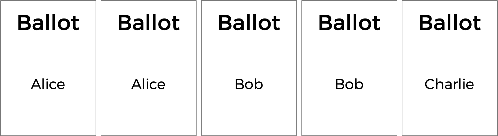
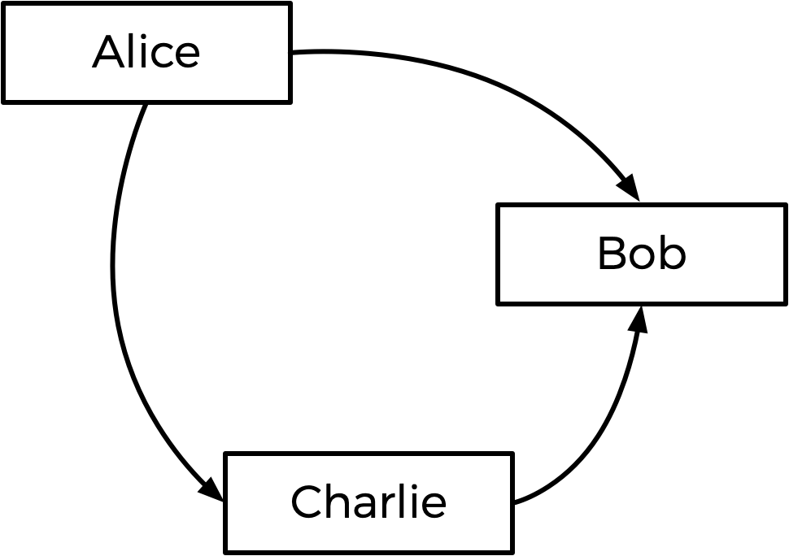

Tideman
Implement a program that runs a Tideman election, per the below.
./tideman Alice Bob Charlie
Number of voters: 5
Rank 1: Alice
Rank 2: Charlie
Rank 3: Bob
Rank 1: Alice
Rank 2: Charlie
Rank 3: Bob
Rank 1: Bob
Rank 2: Charlie
Rank 3: Alice
Rank 1: Bob
Rank 2: Charlie
Rank 3: Alice
Rank 1: Charlie
Rank 2: Alice
Rank 3: Bob
Charlie
Background
You already know about plurality elections, which follow a very simple algorithm for determining the winner of an election: every voter gets one vote, and the candidate with the most votes wins.
But the plurality vote does have some disadvantages. What happens, for instance, in an election with three candidates, and the ballots below are cast?

A plurality vote would here declare a tie between Alice and Bob, since each has two votes. But is that the right outcome?
There’s another kind of voting system known as a ranked-choice voting system. In a ranked-choice system, voters can vote for more than one candidate. Instead of just voting for their top choice, they can rank the candidates in order of preference. The resulting ballots might therefore look like the below.

Here, each voter, in addition to specifying their first preference candidate, has also indicated their second and third choices. And now, what was previously a tied election could now have a winner. The race was originally tied between Alice and Bob. But the voter who chose Charlie preferred Alice over Bob, so Alice could here be declared the winner.
Ranked choice voting can also solve yet another potential drawback of plurality voting. Take a look at the following ballots.

Who should win this election? In a plurality vote where each voter chooses their first preference only, Charlie wins this election with four votes compared to only three for Bob and two for Alice. (Note that, if you’re familiar with the instant runoff voting system, Charlie wins here under that system as well). Alice, however, might reasonably make the argument that she should be the winner of the election instead of Charlie: after all, of the nine voters, a majority (five of them) preferred Alice over Charlie, so most people would be happier with Alice as the winner instead of Charlie.
Alice is, in this election, the so-called “Condorcet winner” of the election: the person who would have won any head-to-head matchup against another candidate. If the election had been just Alice and Bob, or just Alice and Charlie, Alice would have won.
The Tideman voting method (also known as “ranked pairs”) is a ranked-choice voting method that’s guaranteed to produce the Condorcet winner of the election if one exists.
Generally speaking, the Tideman method works by constructing a “graph” of candidates, where an arrow (i.e. edge) from candidate A to candidate B indicates that candidate A wins against candidate B in a head-to-head matchup. The graph for the above election, then, would look like the below.

The arrow from Alice to Bob means that more voters prefer Alice to Bob (5 prefer Alice, 4 prefer Bob). Likewise, the other arrows mean that more voters prefer Alice to Charlie, and more voters prefer Charlie to Bob.
Looking at this graph, the Tideman method says the winner of the election should be the “source” of the graph (i.e. the candidate that has no arrow pointing at them). In this case, the source is Alice — Alice is the only one who has no arrow pointing at her, which means nobody is preferred head-to-head over Alice. Alice is thus declared the winner of the election.
It’s possible, however, that when the arrows are drawn, there is no Condorcet winner. Consider the below ballots.

Between Alice and Bob, Alice is preferred over Bob by a 7-2 margin. Between Bob and Charlie, Bob is preferred over Charlie by a 5-4 margin. But between Charlie and Alice, Charlie is preferred over Alice by a 6-3 margin. If we draw out the graph, there is no source! We have a cycle of candidates, where Alice beats Bob who beats Charlie who beats Alice (much like a game of rock-paper-scissors). In this case, it looks like there’s no way to pick a winner.
To handle this, the Tideman algorithm must be careful to avoid creating cycles in the candidate graph. How does it do this? The algorithm locks in the strongest edges first, since those are arguably the most significant. In particular, the Tideman algorithm specifies that matchup edges should be “locked in” to the graph one at a time, based on the “strength” of the victory (the more people who prefer a candidate over their opponent, the stronger the victory). So long as the edge can be locked into the graph without creating a cycle, the edge is added; otherwise, the edge is ignored.
How would this work in the case of the votes above? Well, the biggest margin of victory for a pair is Alice beating Bob, since 7 voters prefer Alice over Bob (no other head-to-head matchup has a winner preferred by more than 7 voters). So the Alice-Bob arrow is locked into the graph first. The next biggest margin of victory is Charlie’s 6-3 victory over Alice, so that arrow is locked in next.
Next up is Bob’s 5-4 victory over Charlie. But notice: if we were to add an arrow from Bob to Charlie now, we would create a cycle! Since the graph can’t allow cycles, we should skip this edge, and not add it to the graph at all. If there were more arrows to consider, we would look to those next, but that was the last arrow, so the graph is complete.
This step-by-step process is shown below, with the final graph at right.

Based on the resulting graph, Charlie is the source (there’s no arrow pointing towards Charlie), so Charlie is declared the winner of this election.
Put more formally, the Tideman voting method consists of three parts:
- Tally: Once all of the voters have indicated all of their preferences, determine, for each pair of candidates, who the preferred candidate is and by what margin they are preferred.
- Sort: Sort the pairs of candidates in decreasing order of strength of victory, where strength of victory is defined to be the number of voters who prefer the preferred candidate.
- Lock: Starting with the strongest pair, go through the pairs of candidates in order and “lock in” each pair to the candidate graph, so long as locking in that pair does not create a cycle in the graph.
Once the graph is complete, the source of the graph (the one with no edges pointing towards it) is the winner!
Getting Started
Here’s how to download this problem’s “distribution code” (i.e., starter code) into your own CS50 IDE. Log into CS50 IDE and then, in a terminal window, execute each of the below.
- Execute
cdto ensure that you’re in~/(i.e., your home directory). - Execute
cd pset3to change into (i.e., open) yourpset3directory that should already exist. - Execute
mkdir tidemanto make (i.e., create) a directory calledtidemanin yourpset3directory. - Execute
cd tidemanto change into (i.e., open) that directory. - Execute
wget https://cdn.cs50.net/2019/fall/psets/3/tideman/tideman.cto download this problem’s distribution code. - Execute
ls. You should see this problem’s distribution code, in a file calledtideman.c.
Understanding
Let’s open up tideman.c to take a look at what’s already there.
First, notice the two-dimensional array preferences. The integer preferences[i][j] will represent the number of voters who prefer candidate i over candidate j.
The file also defines another two-dimensional array, called locked, which will represent the candidate graph. locked is a boolean array, so locked[i][j] being true represents the existence of an edge pointing from candidate i to candidate j; false means there is no edge. (If curious, this representation of a graph is known as an “adjacency matrix”).
Next up is a struct called pair, used to represent a pair of candidates: each pair includes the winner’s candidate index and the loser’s candidate index.
The candidates themselves are stored in the array candidates, which is an array of strings representing the names of each of the candidates. There’s also an array of pairs, which will represent all of the pairs of candidates (for which one is preferred over the other) in the election.
The program also has two global variables: pair_count and candidate_count, representing the number of pairs and number of candidates in the arrays pairs and candidates, respectively.
Now onto main. Notice that after determining the number of candidates, the program loops through the locked graph and initially sets all of the values to false, which means our initial graph will have no edges in it.
Next, the program loops over all of the voters and collects their preferences in an array called ranks (via a call to vote), where ranks[i] is the index of the candidate who is the ith preference for the voter. These ranks are passed into the record_preference function, whose job it is to take those ranks and update the global preferences variable.
Once all of the votes are in, the pairs of candidates are added to the pairs array via a called to add_pairs, sorted via a call to sort_pairs, and locked into the graph via a call to lock_pairs. Finally, print_winner is called to print out the name of the election’s winner!
Further down in the file, you’ll see that the functions vote, record_preference, add_pairs,sort_pairs, lock_pairs, and print_winner are left blank. That’s up to you!
Specification
Complete the implementation of tideman.c in such a way that it simulates a Tideman election.
- Complete the
votefunction.- The function takes arguments
rank,name, andranks. Ifnameis a match for the name of a valid candidate, then you should update theranksarray to indicate that the voter has the candidate as theirrankpreference (where0is the first preference,1is the second preference, etc.) - Recall that
ranks[i]here represents the user’sith preference. - The function should return
trueif the rank was successfully recorded, andfalseotherwise (if, for instance,nameis not the name of one of the candidates). - You may assume that no two candidates will have the same name.
- The function takes arguments
- Complete the
record_preferencesfunction.- The function is called once for each voter, and takes as argument the
ranksarray, (recall thatranks[i]is the voter’sith preference, whereranks[0]is the first preference). - The function should update the global
preferencesarray to add the current voter’s preferences. Recall thatpreferences[i][j]should represent the number of voters who prefer candidateiover candidatej. - You may assume that every voter will rank each of the candidates.
- The function is called once for each voter, and takes as argument the
- Complete the
add_pairsfunction.- The function should add all pairs of candidates where one candidate is preferred to the
pairsarray. A pair of candidates who are tied (one is not preferred over the other) should not be added to the array. - The function should update the global variable
pair_countto be the number of pairs of candidates. (The pairs should thus all be stored betweenpairs[0]andpairs[pair_count - 1], inclusive).
- The function should add all pairs of candidates where one candidate is preferred to the
- Complete the
sort_pairsfunction.- The function should sort the
pairsarray in decreasing order of strength of victory, where strength of victory is defined to be the number of voters who prefer the preferred candidate. If multiple pairs have the same strength of victory, you may assume that the order does not matter.
- The function should sort the
- Complete the
lock_pairsfunction.- The function should create the
lockedgraph, adding all edges in decreasing order of victory strength so long as the edge would not create a cycle.
- The function should create the
- Complete the
print_winnerfunction.- The function should print out the name of the candidate who is the source of the graph. You may assume there will not be more than one source.
You should not modify anything else in tideman.c other than the implementations of the vote, record_preferences, add_pairs, sort_pairs, lock_pairs, and print_winner functions (and the inclusion of additional header files, if you’d like). You are permitted to add additional functions to tideman.c, so long as you do not change the declarations of any of the existing functions.
Walkthrough
Usage
Your program should behave per the example below:
./tideman Alice Bob Charlie
Number of voters: 5
Rank 1: Alice
Rank 2: Charlie
Rank 3: Bob
Rank 1: Alice
Rank 2: Charlie
Rank 3: Bob
Rank 1: Bob
Rank 2: Charlie
Rank 3: Alice
Rank 1: Bob
Rank 2: Charlie
Rank 3: Alice
Rank 1: Charlie
Rank 2: Alice
Rank 3: Bob
Charlie
Testing
Be sure to test your code to make sure it handles…
- An election with any number of candidate (up to the
MAXof9) - Voting for a candidate by name
- Invalid votes for candidates who are not on the ballot
- Printing the winner of the election
Execute the below to evaluate the correctness of your code using check50. But be sure to compile and test it yourself as well!
check50 cs50/problems/2020/x/tideman
Execute the below to evaluate the style of your code using style50.
style50 tideman.c
How to Submit
Execute the below, logging in with your GitHub username and password when prompted. For security, you’ll see asterisks (*) instead of the actual characters in your password.
submit50 cs50/problems/2020/x/tideman